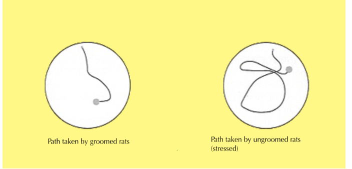

Meaney conducted a study to explore the effects of stress hormones, specifically glucocorticoids, on memory. The research also highlighted how maternal grooming activates gene expression that aids in stress regulation. Groomed rats demonstrated better stress regulation, leading to lower cortisol levels throughout their lives and reduced memory impairments in old age.
The study used an independent samples design with rats randomly assigned to two conditions. In the treatment group, newborn rats were handled daily for three weeks, during which they were separated from their mothers for 15 minutes and intensely brushed to simulate maternal grooming. In contrast, the control group was separated from their mothers without handling or grooming.
At two years of age, the rats underwent a spatial memory test. They were placed in a pool of milky water containing a hidden platform and observed as they navigated to the platform based on prior memory. The findings revealed that neglected rats with high early-life glucocorticoid exposure took more circuitous routes, showing significant hippocampal cell loss and spatial memory deficits. Groomed rats, however, showed minimal cognitive impairments and better spatial memory.
The grooming appeared to activate stress-response genes, an example of epigenetics. This activation helped the rats cope with stress, improving their long-term health and cognitive resilience. The study also illustrated the stress circuit in rats: stress signals travel from the hypothalamus to the adrenal glands via the pituitary gland, releasing cortisol. While cortisol ordinarily regulates the stress response, prolonged exposure overstimulates hippocampal neurons, leading to cell death and impairing memory.
The study has implications for understanding the effects of stress on human cognition. High levels of glucocorticoids and low levels of acetylcholine, observed in both the neglected rats and Alzheimer's patients, suggest a potential link. However, generalizing findings from rats to humans remains questionable. Ethical concerns also arise from the artificial setup and the need to kill rats to measure hippocampal volume.
This research laid the foundation for new theories about stress and cognitive functioning, with subsequent studies, such as those by Carrion et al. (2009), showing hippocampal atrophy in abused children and reduced hippocampal volume in veterans with PTSD.
